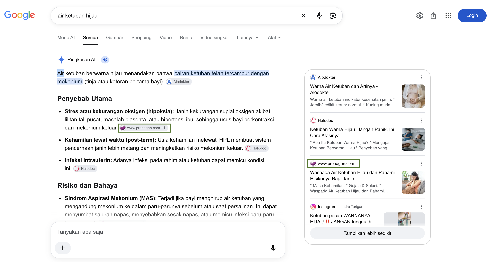

Clicks to the article
KEYWORD RESEARCH · CONTENT BRIEF · EDITING
Content Planning
& Editing.
Waspada Air Ketuban Hijau dan Pahami Risikonya Bagi Janin
I handled keyword research, the content brief, and editing.
MY PART
See the Results ↓Research → Brief → Editing

GOOGLE AI OVERVIEWCited as a SourceSearch: air ketuban hijau · 24 Oct 2026
01 / WHAT THE NUMBERS SHOW
Search Performance.
Google Search Console
3 Nov 2024–22 Oct 2026
Appearances in search results
Across the reporting period
Across the reporting period
✳
Cited in AI Overview
The article appears as a source for “air ketuban hijau” in the captured search result.
#3
First-Page Organic Ranking
Observed at #3 for “air ketuban hijau”. This query-specific result is separate from the GSC average of 4.9.
Source: Google Search Console · Reporting period: 3 Nov 2024–22 Oct 2026
02 / SEE THE EVIDENCE
AI Overview Citations.
A captured result for
“air ketuban hijau”.
WHAT THIS SHOWS
The green outlines highlight PRENAGEN’s citation in the answer and its article in the source panel.
Google AI Overview · 24 Oct 2026PROMPT / ASKED QUESTION
“Apakah berbahaya jika air ketuban berwarna hijau?”
WHAT THIS SHOWS
The same article is also cited as a source for this question, with PRENAGEN highlighted in the answer and source panel.
Google AI Overview03 / MY WORK, UP CLOSE
What I Worked On.
My research and editorial contribution,
from topic selection to the final draft.